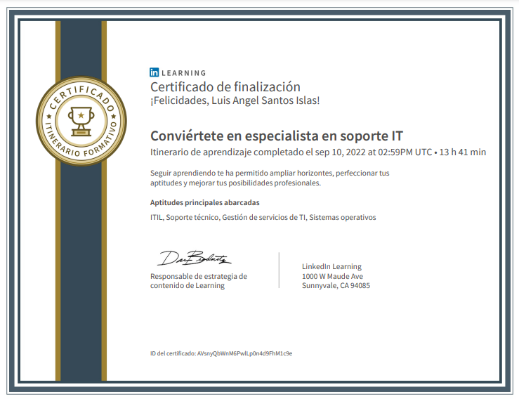

Certificado Especialista en soporte IT

Ver temario en LinkedIn
Temario del Curso
Fundamentos de la atención al cliente para profesionales IT
Ver Certificado en LinkedIn
Fundamentos de ITIL: Introducción a la gestión de sistemas de información
Ver Certificado en LinkedIn
Fundamentos de ITIL: La estrategia de servicios
Ver Certificado en LinkedIn
Fundamentos de ITIL: La concepción de servicios
Ver Certificado en LinkedIn
Fundamentos de ITIL: La explotación de servicios
Ver Certificado en LinkedIn
Fundamentos de ITIL: La transición de servicios
Ver Certificado en LinkedIn
Fundamentos de ITIL: La mejora de servicios
Ver Certificado en LinkedIn
Windows 10 para IT: Actualizaciones y recuperación
Ver Certificado en LinkedIn
Windows 10 para IT: Gestión de acceso remoto
Ver Certificado en LinkedIn
Microsoft Office 365 práctico para administradores: Monitorización y solución de problemas
Ver Certificado en LinkedIn
Microsoft Intune y Autopilot esencial
Ver Certificado en LinkedIn